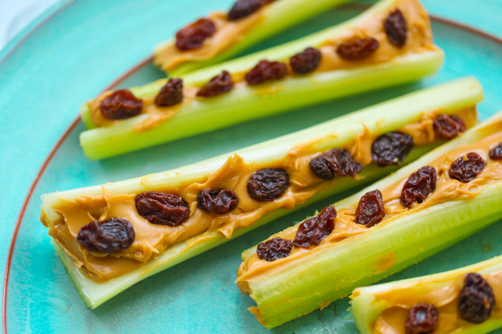

Ants on a Log

Description
The only kind of ants mom wouldn't mind having in the
kitchen! This quick snack is crunchy, sweet, and salty
providing a quick pick-me-up for kids both young and young
at heart.
Ingredients
- 1 celery stalk, sliced into 2 in. lengths
- Peanut butter
- Raisins
Steps
- Spread peanut butter into the trough of each celery slice
- Place the raisins in a line in the peanut butter
- Enjoy!